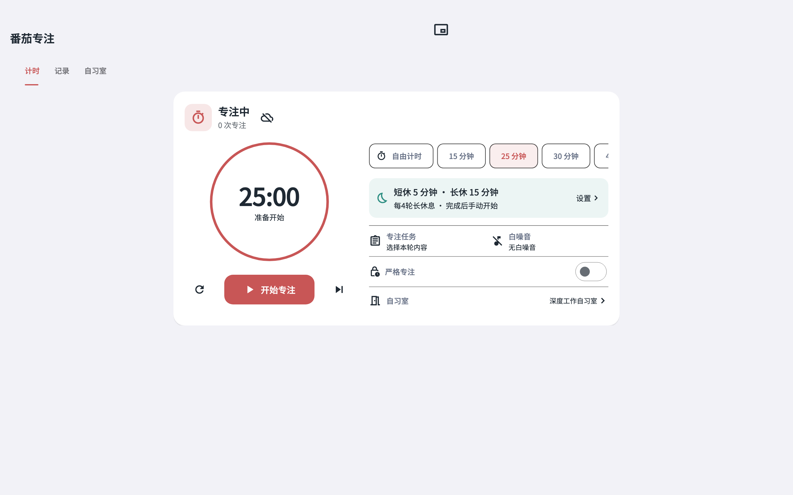
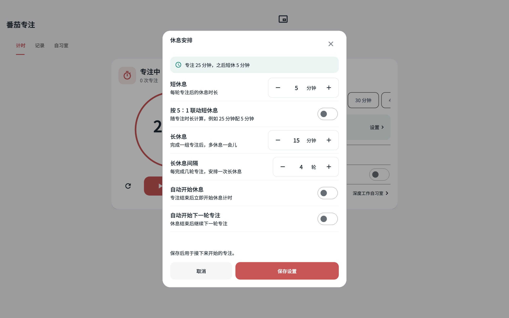
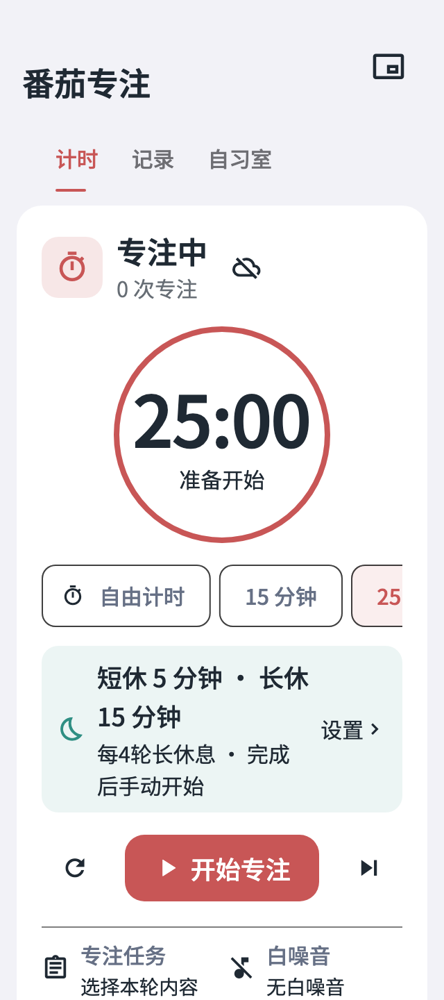
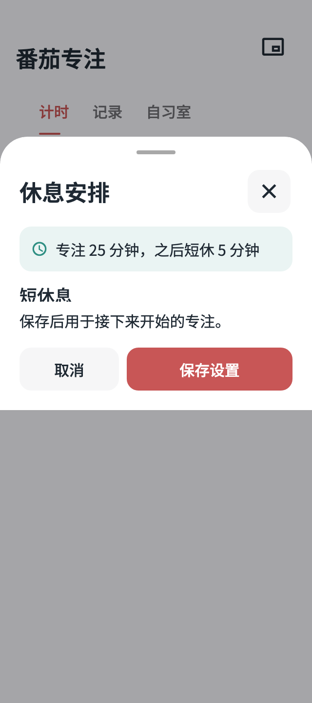
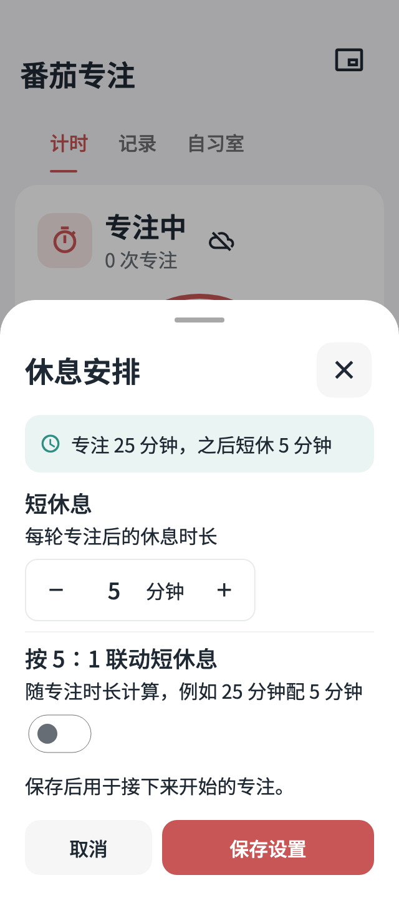
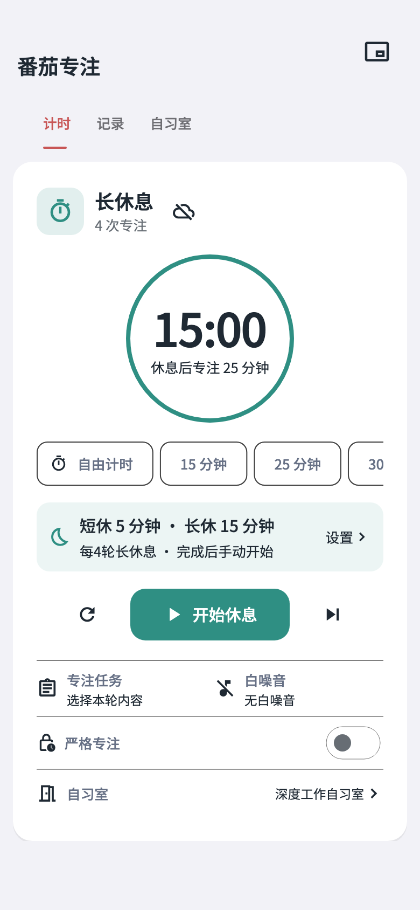
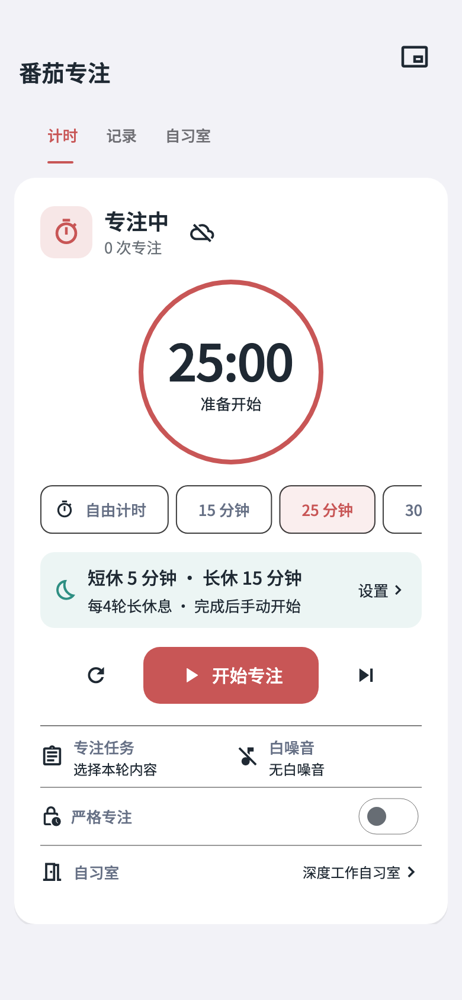
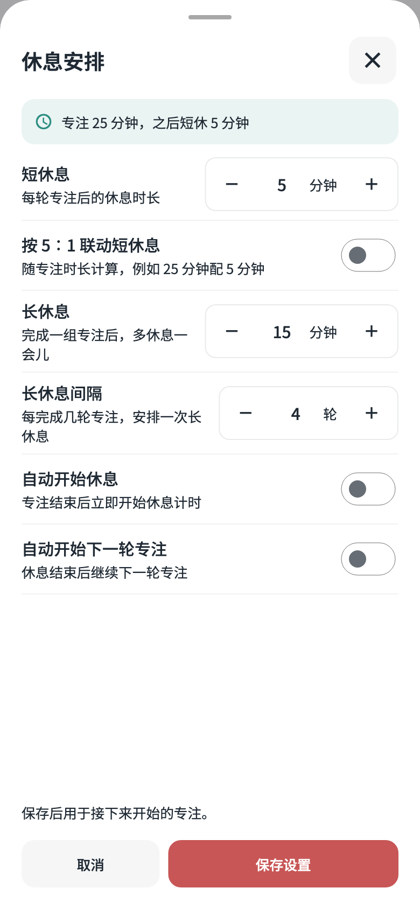
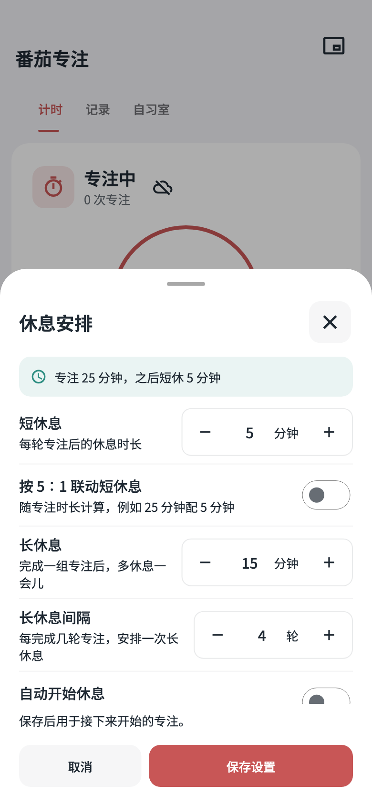
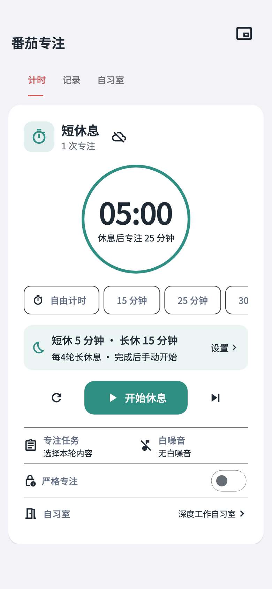

桌面 · 双栏

桌面 · 居中设置

320 宽 · 放大文字

320 宽 · 300px 键盘余高

320 宽 · 放大设置

手机 · 长休息

手机 · 专注

手机 · 内容滚动后固定操作区

手机 · 休息安排

手机 · 短休息

分支 feature/focus-rest-layout。22 文件 / 222 项定向用例已收敛，正式分析无问题。这里是实际 Flutter 组件渲染；原生权限、通知与完整安装包未验证。点击图像查看原尺寸。









